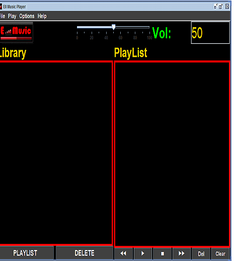

Introducción
Music Player es un reproductor
de música sencillo con el que podrás
escuchar tus canciones favoritas con sólo añadirlas a la lista
de reproducción y darle al Play

Las opciones del reproductor son las siguientes::
PlayLIst: crea una lista de reproducción con las canciones seleccionadas.
Play: reproduce la canción seleccionada o la primera si no hay ninguna seleccionada.
Stop: detiene la reproducción de una canción.
Delete: elimina la canción seleccionada.
Clear: elimina todas las canciones de la lista de reproducción.